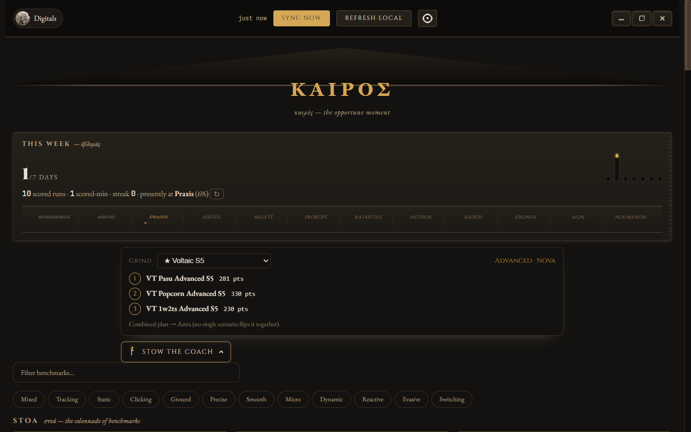
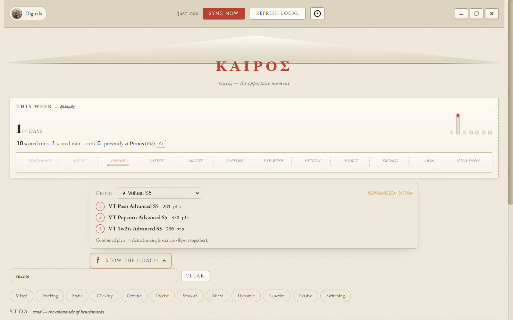
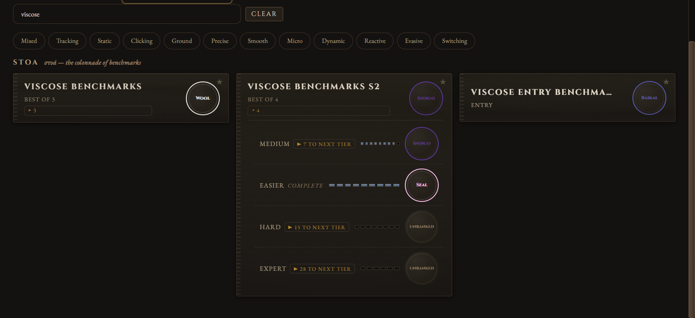
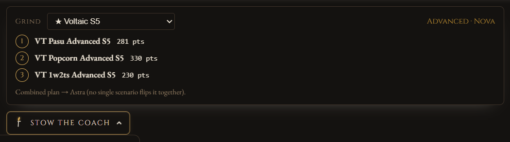
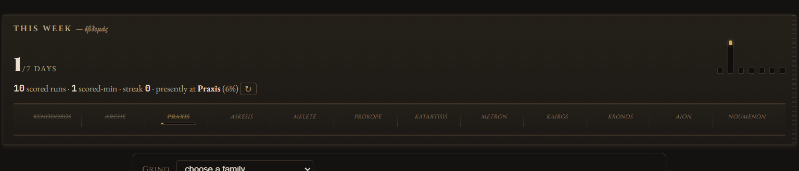
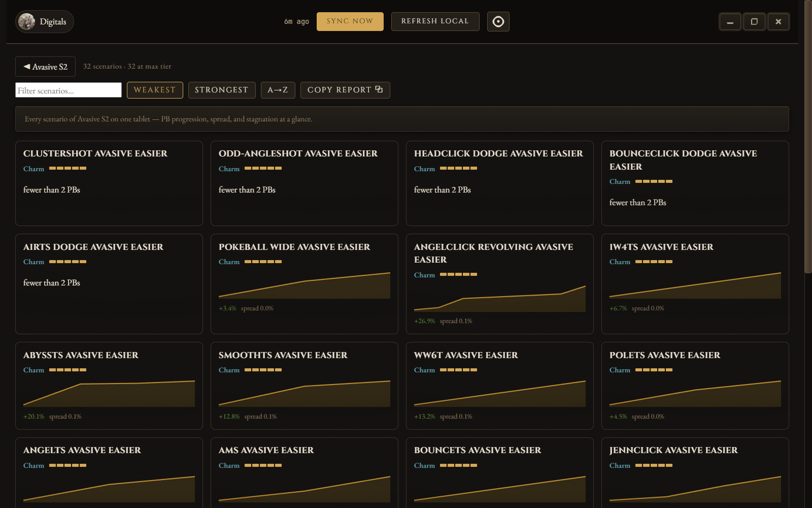
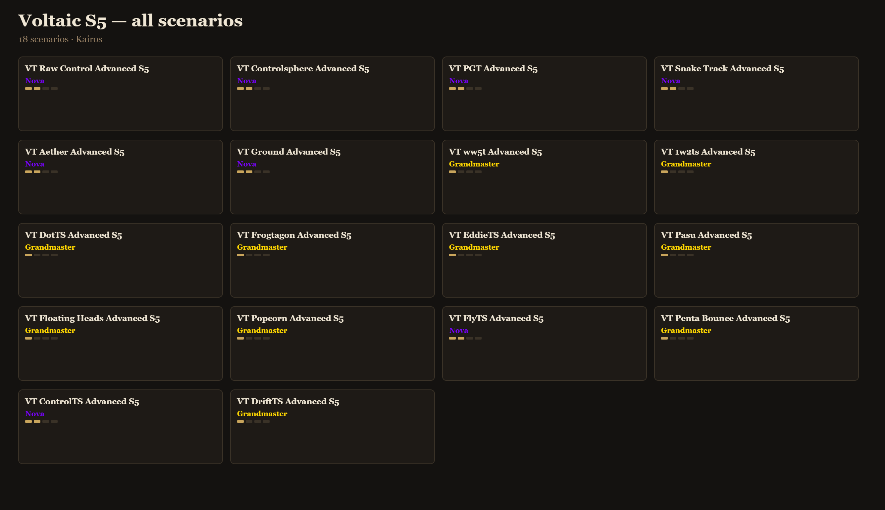
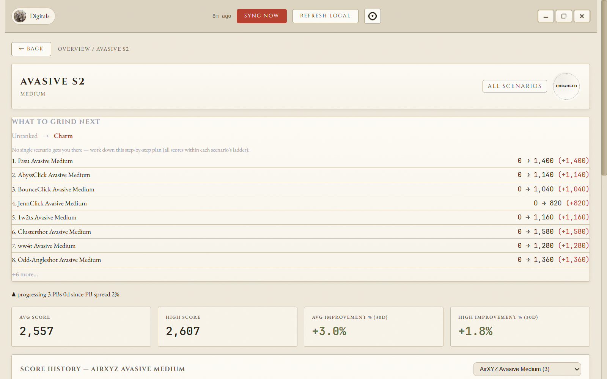
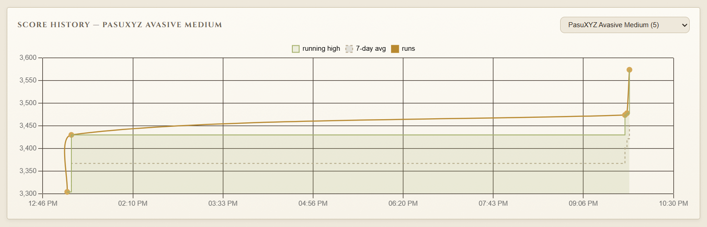
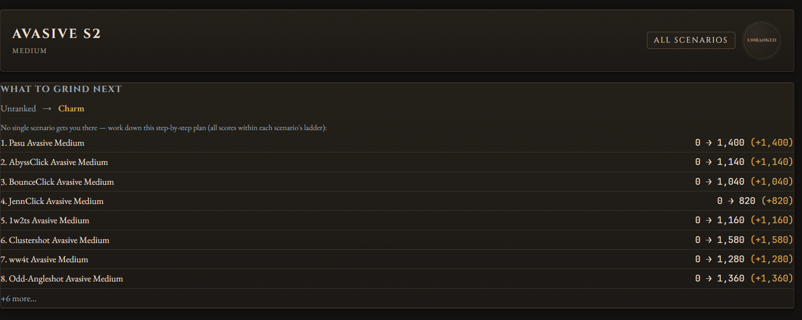

καιρός — the opportune moment
Track every benchmark. Watch ranks climb. Know what to play next.
Ranks recomputed locally, exact per-scenario targets for your next tier, and a weekly plaque of the grind — carved into marble and basalt. No login, no accounts: your whole history lives in one file on your PC.

One temple, two materials.Marble for daylight sessions, basalt for the night shift — or let it follow your OS. Surfaces, rank seals and chart palettes all re-cut on the flip.

Everything the grind needs, nothing it doesn't.Every benchmark computes its rank from local data — 100% client-side, no server fallback.
Marble and basalt themes — or follow the OS. A frameless window with engraved controls, carved scrollbars, surfaces that scale with the window, and charts that re-palette on the flip.
Reverse-engineered from evxl.app: Voltaic energy, harmonic / top-N / count-based methods and more. Every family computes from your scores — no server fallback remains.
Each benchmark page names the cheapest per-scenario scores for the next tier — probed against the local engine, exact for every method family, and capped at each scenario's ladder top. When no single scenario can carry you, you get a numbered plan.
Pick a family and the coach watches your session: the next 3 scenarios to grind, refreshed as you play. App-side only — no game overlay, no auto-refresh race.
Plays per day, scored minutes (actual alive-time — never guessed), streak, rank changes, and your place on the Twelve-Steps frieze. One plaque, top of the app.
Every scenario of a benchmark on one screen: mini score-history charts, PB progression, spread, plateau tags and 30-day improvement. Built for screenshots.
One button composes the analytics report into a single image and copies it to your clipboard — ready for Discord or your notes.
The stoa groups benchmarks by family: best rank seal, difficulty count, and an unroll showing every difficulty's tier-ladder rungs with grind chips — ▶ runs to next tier, or complete.
Score history with PB progression — local plays and sync snapshots, deduplicated. Running high, 7-day average, 30-day improvement — and a sort that cycles weakest → strongest → order.
Every grind target carries spread — how steady your recent runs are — plus plateau tags, so you can swap a stalled grind for one that's still climbing.
A background watcher reads KovaaK's Stats folder while the app is open — new sessions land in your charts on their own. No refresh click.
Every sync diffs your two newest snapshots per benchmark. Rank moves? A RANK UP toast with old → new tier — or one summary when several shift.
Every benchmark tracked on evxl.app — Voltaic, Revosect, PureG, Aimerz+ and the rest — with official rank names and colors.
Twelve type tabs mirroring evxl's own grouping, name search, and pins that survive restarts. The registry updater keeps new seasons coming without a rebuild.
No accounts, no telemetry — only public APIs. Everything lives in %LOCALAPPDATA%\kairos\store.db, with one-click JSON + CSV backup.
Levels carved in XP, from the empty vessel to the thing-in-itself.Every scored run feeds the frieze at the top of the app — the ladder runs κενόδοξος to νοούμενον.
Straight from the app.Click any image to zoom. Captured live from v0.3.0 — both themes.








Three public sources in, one local file out.Nothing is uploaded anywhere. Ever.
Scores, ranks and leaderboard positions. No login needed — only public endpoints.
Finds your profile plus benchmark and rank definitions, cached with a version stamp.
*.csv local play history, watched live while the app runs. Refresh Local re-scans without touching the network.
%LOCALAPPDATA%\kairos\store.db — back it up, move it, it's yours.The tracker that tells you what to play next.evxl.app shows where you stand — Kairos computes how to move.
| Kairos | evxl.app | Spreadsheet | |
|---|---|---|---|
| Next-tier targets | Exact, per scenario | Ranks only | Hand-computed |
| Rank source | Recomputed locally | Server rank (often stale) | Manual lookup |
| All-scenario analytics | One screen + capture | Per-scenario lookups | — |
| Local plays | Automatic CSV watcher | Not tracked | Manual entry |
| Weekly plaque + XP | Streak, levels, rank moves | No | Manual |
| Themeable interface | Marble, basalt, OS-follow | Single theme | — |
| Login needed | None | None | Google account |
| Works offline | Yes, local DB | No | Yes |
Running in under a minute.Windows 10/11 · free · MIT licensed
# needs: git · rust · node 24 git clone https://github.com/Digitals06/kairos.git cd kairos\crates\kovaaks-tauri\ui npm install && npm run build cd ..\src-tauri cargo build --release --features custom-protocol
Full steps in the README. If Kairos helps your grind, support it on Ko-fi.
Shipped when done and verified. No dates.Tracked in ROADMAP.md — open development, public but small.